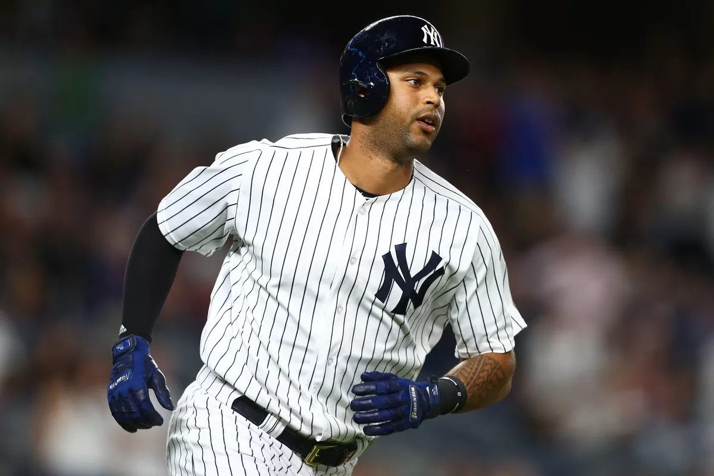

NY 30 games over .500 after CF delivers go-ahead RBI double in 8th
By Bryan Hoch

CLEVELAND -- There was no panic at the bat rack as Corey Kluber dispatched the first six batters on Thursday evening, scarcely breaking a sweat as he cruised with machine-like efficiency. The Yankees had come through against that talented right arm before, and so there was confidence they'd do so again.
Sure enough, the runs began to flow, dispatching expectations for a taut duel between Luis Severino and the reigning American League Cy Young Award winner. Brett Gardner and Didi Gregorius blasted big homers to set up Aaron Hicks' go-ahead RBI double in the eighth inning, helping the Yankees (61-31) improve to a season-high 30 games over .500 with a 7-4 victory over the Indians at Progressive Field.
"We just needed to keep making a guy like that throw pitches, and eventually get to him," Gardner said. "Top to bottom, we've got a lot of depth in our lineup. I thought guys did a good job of making him battle and really throw pitches. He pitched into the eighth inning, but we could've gotten him out of there way earlier."
Gardner ripped a game-tying two-run shot in the third inning, part of a two-homer performance, with his second blast coming in the ninth for an insurance run. Gregorius -- who homered twice off Kluber in the deciding Game 5 of last year's AL Division Series -- cleared the fence in the fourth.
"They're one of the best offensive teams in baseball," Kluber said. "The whole lineup, one through nine, is a good lineup. There's not really any letdowns, from the leadoff hitter to the ninth hitter. If you make mistakes like I did a few times tonight, they took advantage of them and it cost us."
Cleveland peppered an unusually hittable Severino for four runs and nine hits over five innings. Edwin Encarnacion and Jose Ramirez homered off Severino, who completed the first half with a 2.31 ERA and is a leading candidate to start for the AL in next week's All-Star Game presented by Mastercard (Tuesday, 7:30 p.m. ET on FOX).
"His slider seemed a little flat to me," Yankees manager Aaron Boone said. "Even some of the harder fastballs, they had some really good swings on it. Credit them with really squaring him up, more so than we've seen at any time this year."
Ramirez's fifth-inning drive evened the score until the eighth, when Gregorius worked a leadoff walk and scored on Hicks' 405-foot double to deep center field, according to Statcast™.
"Aaron does so many things, as far as his ability to get on base, the speed element, the power he brings from both sides of the plate," Boone said. "He's just a really good player and I'm glad that people are starting to see that a little bit more."
That chased Kluber, with Indians manager Terry Francona having extended his ace, attempting to bypass a bullpen that has permitted the third-most runs in baseball from innings seven through nine.
Hicks stole third and scored on a Greg Bird sacrifice fly, the sixth run charged to Kluber, who took the AL Cy Young Award home last year ahead of Chris Sale of the Red Sox and third-place finisher Severino. Kluber permitted eight hits over 7 1/3 innings, walking two and striking out nine.
New York's bullpen fired four scoreless, hitless frames in relief of Severino, with Adam Warren, David Robertson, Dellin Betances and Aroldis Chapman each taking the hill. Robertson was credited with the win and Chapman logged his 25th save, pitching for the first time in five days.
"That's a big win for us today," Gardner said. "For us to be able to come out on top on a night when Sevy struggled a little bit for him, it's a big night for us."